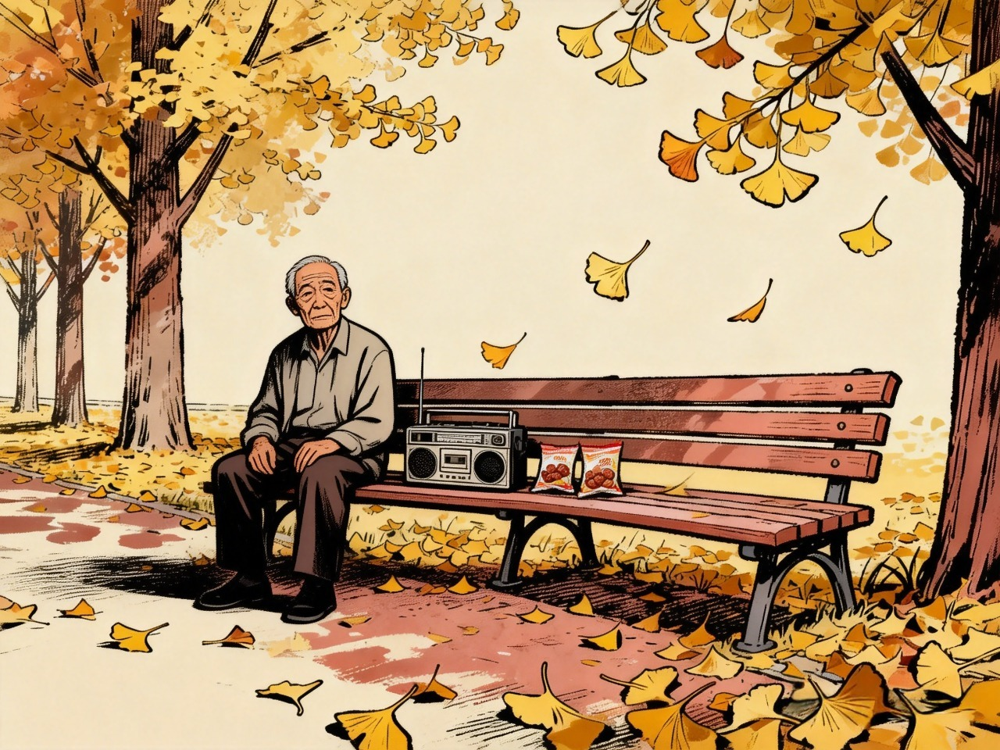
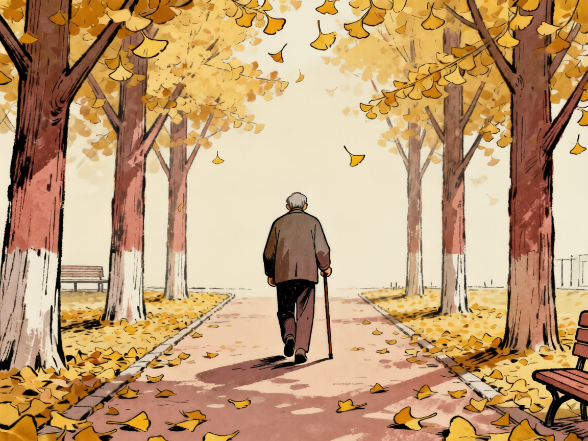
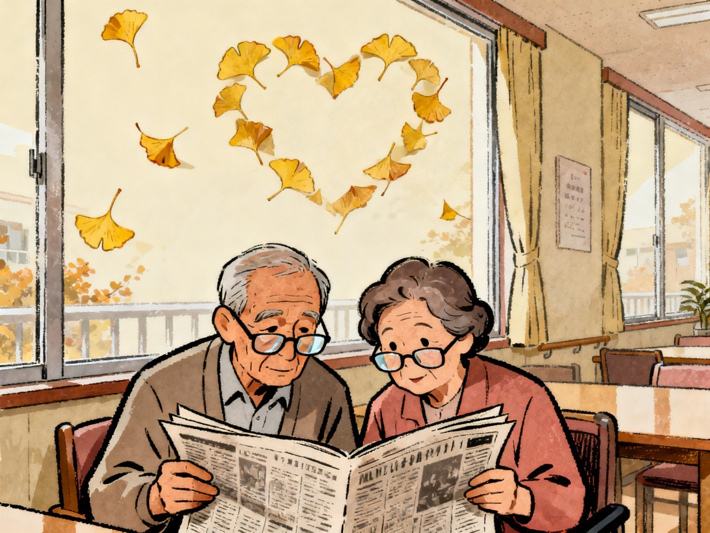
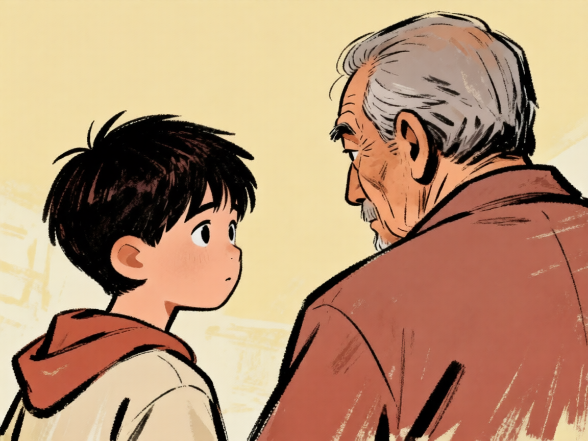
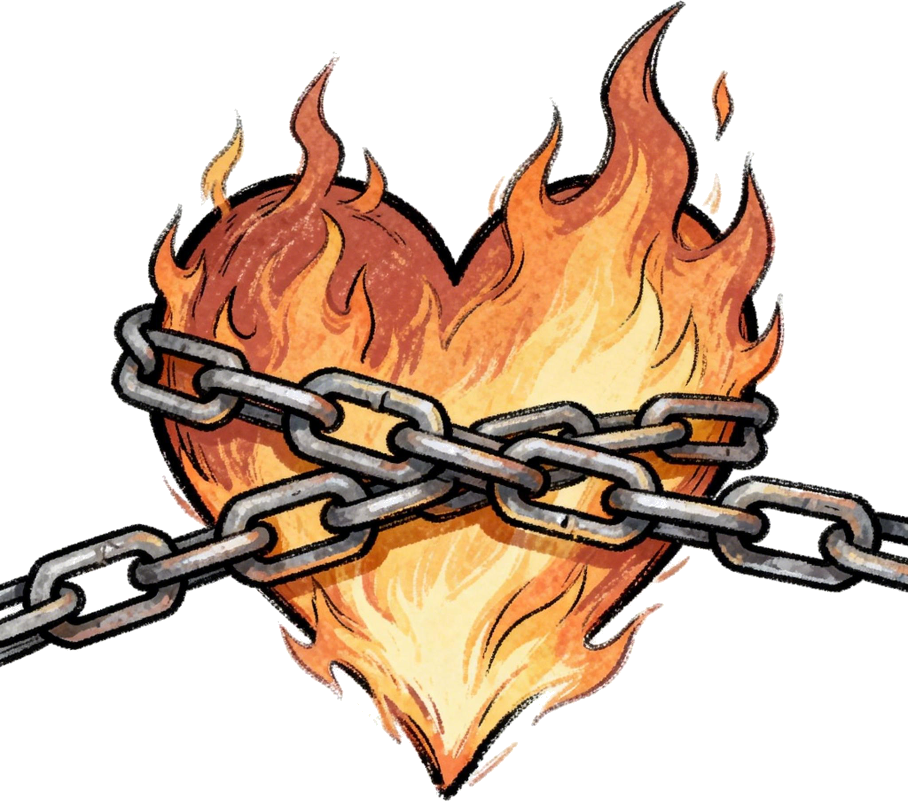

老周45岁那年与妻子离婚，子女常年在外务工。
一晃二十年，公园里的银杏树黄了又落，落了又黄。
老周45岁那年与妻子离婚，子女常年在外务工。
一晃二十年，公园里的银杏树黄了又落，落了又黄。

老周每天独自来坐一会儿，带收音机，吃话梅，听评弹。
旁边没人，他也习惯了。

漫长的独处里，三餐一人、看病一人、散步一人，孤独成了晚年最常态的底色。

直到银杏树下，出现另一个揣着自制话梅的身影，吴阿姨。
他们约好每天下午三点，在老年活动室碰面。他们一起看报纸，一起听评弹。
一段不领证、只搭伴的黄昏恋，就此开始。
而像老周与吴阿姨这样的老人，正在全国3.1亿老年群体中，成为越来越普遍的缩影。
一个相伴故事，映照出千万老年人藏在心底的情感渴望。个体的孤独与期盼，放在全国老龄化大背景下，变成了不容忽视的社会现状。
有多少老人可能"想爱却无人"？
人口老龄化深度持续推进，超 3.1 亿老年人口构成庞大基数，在此基础上，老年群体婚姻分化、独居、精神孤独等问题持续凸显，大量单身中老年群体逐步形成。
截至2024年底，全国60周岁及以上老年人口
0万
老年人婚姻状况分布
每5个老年人中，至少有1人处于无配偶状态，而高龄女性丧偶率超过一半。
来源：2021年《第五次中国城乡老年人生活状况抽样调查基本数据公报》
整体老年群体无配偶人群占比约为25%，但单一数值无法体现群体内部的差异。拆分年龄、性别后能清晰看到分层：高龄老人、女性老人的无配偶占比远高于整体平均水平，两类群体体量庞大，直接拉高了老年单身群体的整体规模。
不同年龄老人丧偶率
不同性别老人丧偶率
来源：《第五次中国城乡老年人生活状况抽样调查基本数据公报》
物理层面的独居、丧偶，直接造成老年人精神慰藉缺失，城乡情感空巢程度差异显著，长期孤独还会提升抑郁症状发病概率，我国老年心理健康压力高于全球平均水平。
老龄化基数、高发丧偶、普遍独居、持续性心理孤独多重因素叠加，催生了规模庞大的银发单身群体，巨大的陪伴需求反向推动中老年相亲赛道快速扩容，市场增长速度赶超青年婚恋市场。
银发单身人群超
0 万
中老年人已成为相亲市场中坚力量
2025 年银发婚恋市场规模预计达
0 亿元
年复合增长率
0%
增速首次超越年轻人相亲市场
老周和吴阿姨约定，彼此相伴但不办理结婚登记，这就是当下流行的"搭伴养老"。很多子女、年轻人简单将其等同于"同居""搭伙过日子"，却不了解这种模式背后的定义、优势与天然法律漏洞。大众认知偏差，是黄昏恋第一道隐形门槛。

很多年轻人简单把搭伴养老等同于"逃避婚姻责任"，却忽略老年人步入暮年的特殊处境：他们早已走完半生打拼，名下房产、存款是留给子女一辈子的根基，自身身体机能逐年衰退，随时可能遭遇大病住院，再婚带来的财产捆绑、赡养牵连，足以打破两代人安稳的生活。
对老周、吴阿姨这代老人而言，年轻时的婚姻绑定财产、血缘、责任，是生存刚需；可到晚年，他们想要的仅仅是饭后有人同行、生病有人搭把手、闲暇有人闲话家常，一份纯粹的情绪陪伴，而非复杂的利益捆绑。
搭伴养老，则用"不绑定法定关系"的方式，划出一道温和的缓冲带——保留温暖陪伴，隔绝财产纠纷，这是老年人权衡亲情、财产、健康后，主动选择的折中解法。
点击右上角标签切换
点击卡片查看大众普遍认知误区
认知盲区带来误解，误解催生冲突。当老人真正开启一段搭伴养老的黄昏恋，许多现实阻碍会接踵而至。
观念误解只是第一道坎，真正困住黄昏恋的，是子女、财产、法律叠加的现实难题。
点击手机屏幕查看文字
子女反对黄昏恋，核心并非反感父母追求幸福，而是根植于财产焦虑。大量子女默认：父母再婚/搭伴，自家房产、存款会被外人分走；担心对方亲属借机索取赡养、医疗费用。
搭伴以后，老周发现事情没那么简单——
退休金谁管？房子算谁的？生病了谁签字？
结了婚的人，这些问题法律已经替他们答过了。
但搭伴不一样——没有那张证，每件事都得自己谈。
来源：《从"孤独终老"到"夕阳热恋"：6200万单身老人的
爱与勇气，正在改写"新老人"的晚年剧本》
黄昏恋困境主要原因（多选）
财产分歧是黄昏恋最核心矛盾，一旦选择再婚，房产处置极易引发子女干预，甚至直接破坏原本的赡养关系；司法案件也印证，房产分割是老年再婚离婚诉讼的头号诱因，子女反对的核心落脚点同样集中在财产分配。
涉及房产处置的再婚纠纷里，89% 会出现子女介入，其中 34% 进一步造成两代赡养关系恶化。北京法院案件显示，老年再婚离婚案件中 80% 牵扯房产分割；同时 70% 子女反对父母再婚，核心顾虑均为财产划分问题。

点击查看相关数据现实再婚存在重重阻碍，不少老人转向线上渠道寻求陪伴，也因此落入犯罪分子圈套，婚恋引流式电诈专门瞄准中老年群体，造成巨额财产损失。
2025 年 10 月 28 日北京市公安局刑侦总队新闻发布会提出北京地区案均损失最高的电诈类型为虚假网络投资理财；在百万元以上特大电诈案件中，通过婚恋交友引流作案占比 65%。46 岁以上受害者占六成，其中60岁以上老年人占两成，案件最高受害年龄达88岁。
晚年相爱，年轻时仅凭心动，老年却要提前对抗财产、亲情、法律三重难题。但风险并非无解，一套完整、可落地的解决方案，能够为黄昏恋撑起保护屏障。
法律不会替老人相爱，但能提前规避所有最坏的结果；子女的隔阂可以通过真诚沟通化解；社会配套服务，正在逐步填补搭伴养老的制度空白。
将鼠标移到法典上查看三大法律工具
法律能守住财产与医疗权益，但想要家庭和睦，还需要和子女做好真诚沟通。在家庭层面，关键在于通过真诚沟通来化解子女的对立情绪，一方面要提前主动交底，主动向子女出示财产清单和公证规划，明确房产、存款不会外流，从而消除他们的核心焦虑；另一方面要共同约定边界规则，和子女一起商议搭伴生活的开销、医疗费用分摊以及节日居住安排等事项，并形成书面或口头的共识。
在个人与家庭做好规划之外，社会配套服务也在不断完善，为老人的黄昏恋兜底。社区公益法律服务要定期开设老年再婚、搭伴养老的普法课堂，免费提供公证咨询和意定监护文书代写指导，切实降低老人的法律服务门槛；同时要完善老年情感服务，由社区老年活动中心搭建正规交友平台，减少私下交往因信息不对称带来的被骗风险，并配套心理疏导，接纳老人晚年的情感需求，逐步消除"老年人谈恋爱丢人"的世俗偏见；此外，还应健全养老配套制度，将搭伴互助养老纳入社区养老服务体系，为结伴同居的老人推出双人居家养老护理补贴，完善意定监护登记和异地老年陪护等便民政策，并普及死亡教育，让子女真正理解父母晚年对陪伴的刚需。
我们需要的不只是允许黄昏恋
而是一份不羞耻的财产公证
一场公开的死亡教育
一次子女真诚的对话
一个把搭伴也纳入社会支持体系的世界
法律工具、家庭和解、社会服务三者并行，才能让老周、吴阿姨这样的故事不再小众，让每一位老人都拥有勇敢去爱的底气。
他们不是例外，而是未来
点击查看养老协议
后来，老周生了一场病，是吴阿姨签的手术同意书（意定监护）。
老周的儿子从外地赶回来，沉默很久，说了一句：
"谢谢吴姨。"
那天下午三点，银杏树下，椅子不再是空的。
人终究需要另一个人。
需要有人分享一袋话梅。
需要有人一起听评弹。
需要有人在漫长岁月中回应一句：
"我在。"
我们讨论的，
从来不只是黄昏恋。
而是当中国进入深度老龄化社会后，
人们如何继续与他人相爱。
因为人们害怕的，
从来不是衰老本身。
而是在漫长岁月里，
无人同行。